"이번 달 사진 전시는 장소가 먼저 보인다. 늪, 광산, 도시, 영화의 거리, 지역 사진제. 사진이 무엇을 찍었는지보다 어디에 오래 머물렀는지가 먼저 읽힌다."
10월은 짧게 닫히는 개인전과 11월까지 이어지는 지역 전시가 함께 걸린다. 첫 주엔 인사동 가온갤러리와 스페이스 이신을 먼저 확인해야 하고, 중순엔 유승호 〈BLUE HOUR〉, 굿스페이스 갤러리, 갤러리 AP_9, 마틴 파 회고전이 차례로 닫힌다. 월말에는 유화정의 첫 전시와 피크닉의 데보라 터브빌, 캐논갤러리, 11월 초까지는 사진진주와 하이메 페르무트의 전시가 이어진다. 오래 열리는 민병헌과 이인미, 10월 중순 문을 여는 로저 발렌 개인전은 한 달 안에 서두르지 않아도 되지만, 10월의 동선을 잡을 때 중심축으로 삼기 좋다.
전시 바로가기 · 기간과 장소
본문에 기재된 일정과 장소를 모았다. 별도 안내가 없는 관람시간·휴관·가격·예약과 상세 주소는 확인이 필요하다.
먼저 닫히는 전시
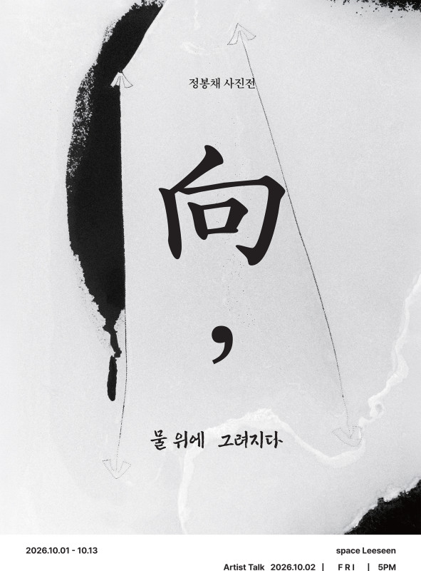
정봉채, 〈向, 물위에 그려지다〉
스페이스 이신. 10.1 – 10.13.
우포늪은 정봉채에게 풍경보다 오래된 사유의 장소다. 이번 전시는 물 위에 생긴 흔적에 집중한다. 바람이 지나간 자리, 얼음이 녹으며 만든 경계, 수면 위 부유물과 그물이 어느 순간 선과 기호가 된다. 제목의 '向'은 방향을 뜻하지만, 사진 속 방향은 목적지를 딱 집어주지 않는다. 어디로 가야 하는지보다, 지금 어디에 서 있는지를 묻게 만드는 전시다.
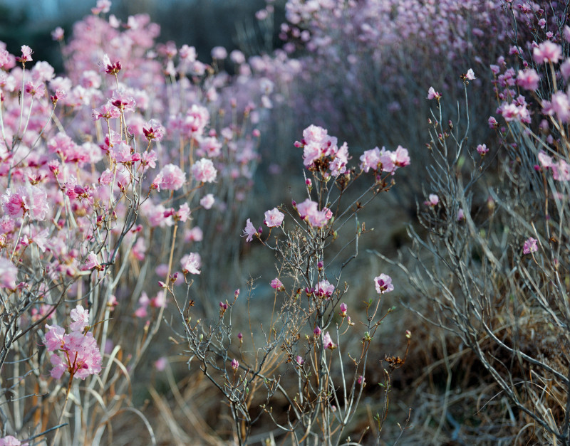
이주형, 〈Bloom and Boundary〉
굿스페이스 갤러리. 9.15 – 10.14.
진달래를 통해 빛과 감각의 순간을 다루는 개인전. 꽃을 피사체로 놓지만, 핵심은 꽃 자체보다 피어나는 순간의 경계에 있다. 10월 중순에 닫히니 서울 동선에서는 먼저 챙겨두는 편이 좋다.
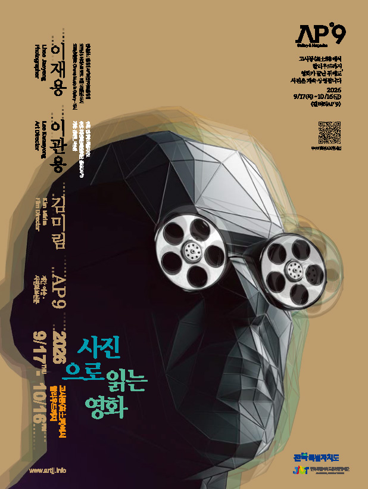
이재용·이관용·김미림, 〈사진으로 읽는 영화: 고사동에서 헐리우드까지〉
갤러리 AP_9. 9.18 – 10.16.
사진과 영화가 서로를 읽는 자리다. 제목의 고사동은 전주의 영화 거리와 연결된다. 사진이 영화의 장면을 따라가는 것이 아니라, 영화가 남긴 장소와 기억을 사진의 방식으로 다시 읽는 전시로 보면 좋다.
유승호, 〈BLUE HOUR〉
LAYER 7. 10.3 – 10.11.
배우 유승호의 첫 필름 사진전. 전시 소개와 예매 정보는 이미 별도 기사로 정리했다. 오피트 기사에서 보기 →
마틴 파, 〈We Are Martin Parr〉
서울시립 사진미술관. 7.16 – 10.18.
10월 중순 전에 반드시 챙겨야 할 전시다. 서울시립미술관 안내에 따르면 사진 약 500점과 사진책 90권을 포함한 대규모 회고전으로, 서울시립 사진미술관의 첫 사진작가 조명전이라는 의미도 있다. 이미 별도 기사로 길게 다뤘으니, 10월 목록에서는 마감 임박 전시로 다시 표시해둔다. 오피트 기사에서 보기 →
10월 말까지
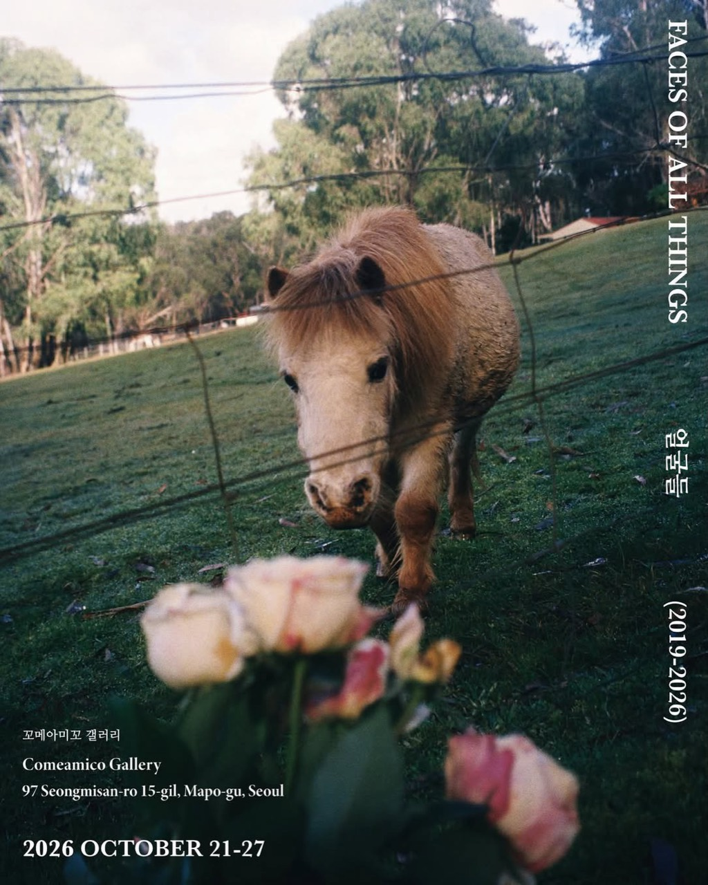
유화정, 〈FACES OF ALL THINGS〉
꼬메아미꼬 갤러리. 10.21 – 10.27. 12:00 – 18:00. 서울 마포구 성미산로15길 97.
Threads에 공개된 안내에 따르면, 유화정이 8년간 찍은 필름들을 모아 여는 첫 전시다. 전시 기간 동안 작가가 상주할 예정이라고 밝힌 만큼, 사진을 본 뒤 직접 이야기를 나누기 좋은 작은 전시로 보인다. 포스터의 한국어 제목은 〈얼굴들〉, 영문 제목은 〈FACES OF ALL THINGS〉로 표기되어 있다. 작가의 Threads 안내 보기 →
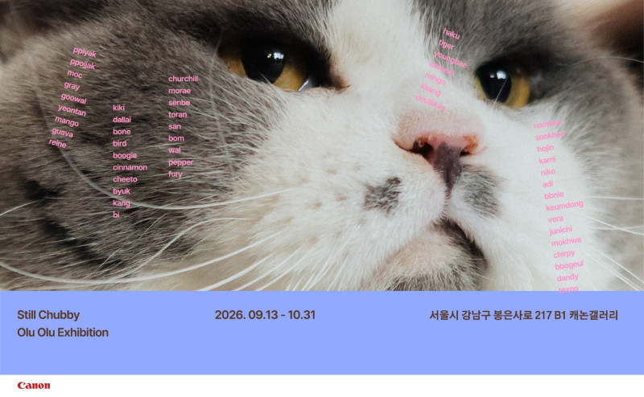
〈STILL CHUBBY - 이대로 오래〉
캐논갤러리. 9.13 – 10.31.
제목 그대로 '이대로 오래'를 말하는 전시. 캐논갤러리에서 10월 말까지 이어진다. 장비 브랜드의 공간에서 열리는 전시지만, 결과물보다 사진이 일상 안에서 오래 머무는 방식에 더 가까운 목록으로 읽힌다.
11월까지 이어지는 축과 지역 전시
2026 대구사진비엔날레 특별전, 〈붉은 깃발 별이 되어〉
대구문화예술회관. 9.11 – 11.1.
지난달 기사에서 다룬 전시다. 2026 / 9, 이달의 사진 전시에서 보기 →
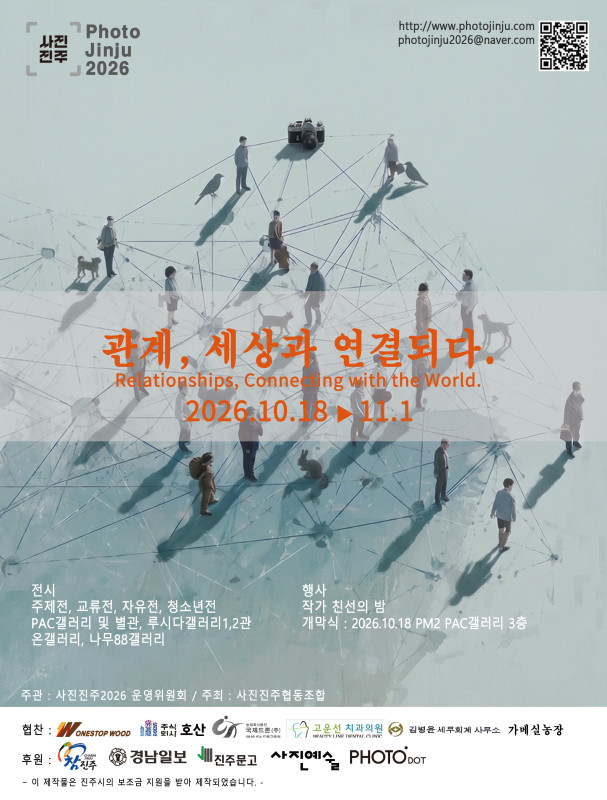
사진진주 2026, 〈관계, 세상과 연결되다〉
PAC갤러리 외 3개 전시장. 10.18 – 11.1.
2017년 시작된 진주 지역 사진 예술 축제. 올해는 '관계'를 키워드로 삼는다. 개인의 내면에서 세상과 연결되는 방식으로 시선을 넓히는 구성이다. 지역 사진제가 하나의 도시 안에서 여러 공간을 여는 방식은 늘 좋다. 하루짜리 관람보다 도시를 걸으며 보는 쪽이 맞다.
하이메 페르무트, 〈los libros y la noche〉
SVA 앤드류장 갤러리. 9.19 – 11.1. 아티스트 토크 10.17.
뉴욕과 한국 사이에서 만든 두 작업, 〈Olmedini El Mago〉와 〈BLINDNESS〉를 함께 놓는 개인전이다. 작가의 공식 소개는 이주, 기억, 소속감, 그리고 낯선 문화 안에서 경험하는 '보이지 않음'을 전시의 중심에 둔다. 규모보다 결이 좋은 전시라, 10월 말 서울 동선에서 조용히 끼워 넣기 좋다. 작가 공식 안내 보기 →
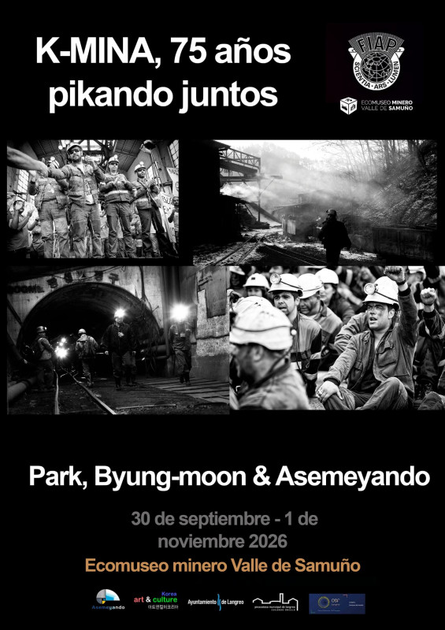
박병문·야스메얀도, 〈막장 광부들의 삶〉
사무뇨 밸리 광산 생태박물관. 9.30 – 11.1.
박병문은 오랫동안 한국 탄광촌과 광부들의 삶을 기록해온 다큐멘터리 사진가다. 이번 전시는 한국과 스페인의 광산, 그리고 그곳에서 일한 사람들의 삶을 함께 놓는다. 전시장 이름부터 장소의 기억을 품고 있다. 사진이 기록으로 남아야 하는 이유가 분명한 전시다.
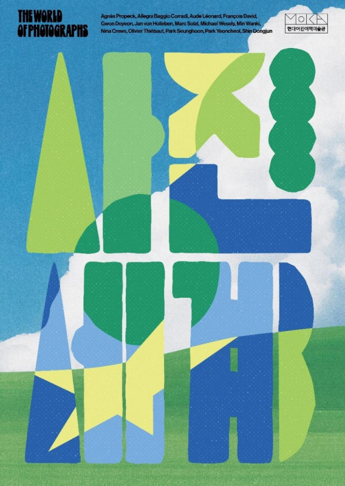
〈사진 세계〉
현대어린이책미술관. 7.21 – 11.1.
사진 속에 겹겹이 담긴 여러 세계를 탐색하는 전시. 어린이책미술관에서 열리는 만큼 입구는 가볍지만, 사진을 처음 만나는 관객에게 사진이 어떻게 세계를 만들고 읽히는지 보여주는 자리로 볼 수 있다. 아이와 함께 가는 동선이라면 10월 말 전에 넣어둘 만하다.
천천히 봐도 좋은 전시
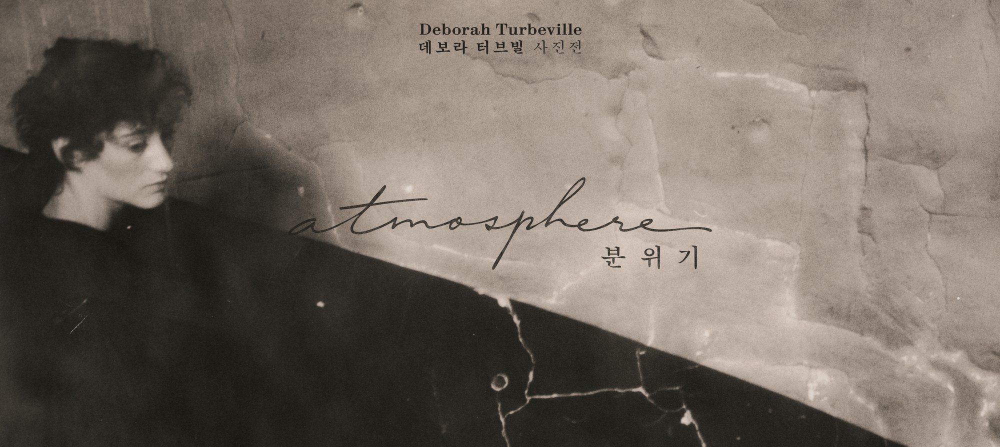
데보라 터브빌, 〈분위기〉
피크닉. 10.23 – 2027.2.28. 서울 중구 퇴계로6가길 30.
10월 말에 열리지만, 이 목록에서 가장 큰 축으로 따로 표시해둘 전시다. 피크닉 공식 소개에 따르면 터브빌은 1970년대 〈보그〉를 중심으로 활동하며 헬무트 뉴튼, 기 부르댕과 함께 패션 사진의 새로운 흐름을 만든 인물로 소개된다. 화려한 상품성보다 피사체의 내면과 주변에 감도는 공기, 그가 자주 사용했던 말 그대로 '분위기'를 사진의 중심에 둔 작가다.
전시 규모도 작지 않다. SPACE 보도에 따르면 뉴욕 MUUS Collection과 협력해 기획됐고, 빈티지 프린트를 포함한 오리지널 작품 102점, 뉴욕에서 새로 제작한 컨템포러리 프린트 88점, 콜라주 원본 등을 포함해 약 200점을 선보인다. 초기 습작에서 포토콜라주까지 이어지는 구성이라, 단순 패션 사진전보다 한 작가의 시각 언어를 정리하는 회고전 성격으로 보는 편이 맞다. 2027년 2월까지 이어지지만 10월에 문을 여는 가장 중요한 사진 전시 중 하나다. 피크닉 공식 안내 보기 →
로저 발렌, 개인전
뮤지엄한미 삼청. 10.15 – 2027.2.
뮤지엄한미의 본 전시 상세 안내가 아직 별도 페이지로 정리되기 전이라 제목과 세부 구성은 공개가 더 필요하지만, 작가 공식 전시 일정에는 10월 15일부터 2027년 2월까지 뮤지엄한미 삼청에서 열리는 개인전으로 올라와 있다. 뮤지엄한미가 9월에 진행한 〈미술관 B1: 다음 구역은 로저 발렌입니다〉 역시 10월 로저 발렌 개인전의 프리뷰 성격으로 소개됐다. 발렌의 사진이 설치, 드로잉, 심리적 무대와 강하게 결합해온 만큼, 상세 정보가 열리면 이 목록에서 별도 기사로 빼도 될 전시다. 작가 공식 일정 보기 →
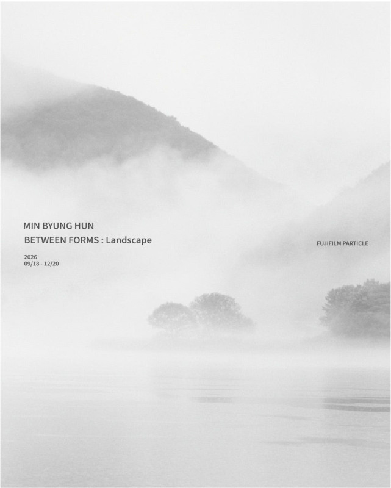
민병헌, 〈BETWEEN FORMS〉
파티클, 하우스 오브 포토그래피. 9.18 – 12.20.
민병헌의 사진은 늘 너무 많이 말하지 않는 쪽에 있다. 흐릿한 빛, 낮은 대비, 거의 사라질 듯 남아 있는 형상. 전시 제목처럼 형상과 형상 사이를 보는 자리다. 12월까지 이어지니 서두를 필요는 없지만, 조용한 흑백 사진을 보고 싶은 날엔 10월의 가장 확실한 선택지다.
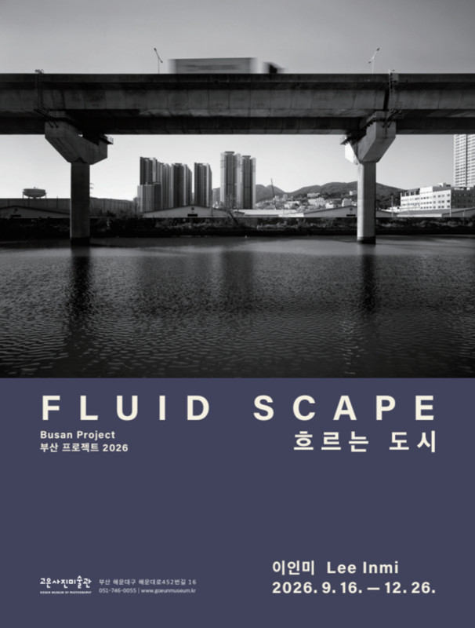
이인미, 〈흐르는 도시 FLUID SCAPE〉
고은사진미술관. 9.16 – 12.26.
고은사진미술관의 부산 프로젝트 2026. 도시는 고정된 배경이 아니라 흐르는 풍경이다. 부산에서 열리는 긴 호흡의 사진전이라, 10월 부산 동선이 있다면 캐논갤러리나 다른 지역 전시보다 우선순위를 높여도 좋다.
동선 메모
서울은 10월 첫째 주와 둘째 주가 관건이다. 이경택 〈Zero Point -영점-〉은 가온갤러리에서 10월 5일에 먼저 닫고, 정봉채는 13일, 이주형과 흰물결갤러리 2인전은 14일, 갤러리 AP_9는 16일에 닫는다. 마틴 파 회고전은 18일까지라, 서울시립 사진미술관을 아직 못 봤다면 이 주간에 우선순위를 높여야 한다.
대구사진비엔날레 특별전은 지난달 기사에서 이미 정리했다. 10월 동선에서는 링크만 확인하고, 새로 추가되는 축은 10월 18일 이후의 진주다. 사진진주를 보러 간다면 하루짜리 전시 관람보다 도시 산책에 가깝게 잡는 쪽이 좋다. 서울에 남는다면 같은 기간 SVA 앤드류장 갤러리의 하이메 페르무트 전시를 조용한 대안으로 넣을 수 있다.
서울은 10월 하순에 한 번 더 잡아도 좋다. 유화정의 〈FACES OF ALL THINGS〉가 21일부터 27일까지 꼬메아미꼬 갤러리에서 열리고, 데보라 터브빌 〈분위기〉는 23일부터 피크닉에서 시작된다. 뮤지엄한미 삼청의 로저 발렌 개인전도 10월 중순 이후 확인해야 할 큰 축이고, 캐논갤러리 〈STILL CHUBBY〉는 31일까지 간다.
부산은 고은사진미술관의 이인미 전시가 12월까지 길게 간다. 10월 부산 동선이 있다면 느긋하게 시간을 두고 보는 쪽이 맞다.
10월의 전시는 거대한 한 방보다 오래 들여다본 장소들이 만든다. 우포늪의 수면, 광산의 막장, 도시의 흐름, 지역 사진사의 축적. 사진은 결국 어디에 오래 머물렀는지를 숨기지 못한다.